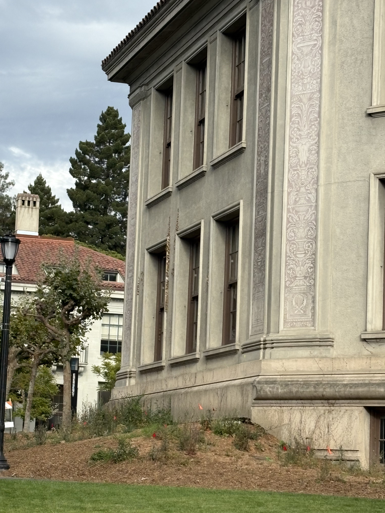
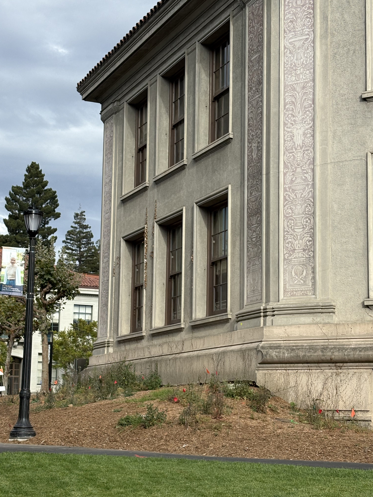
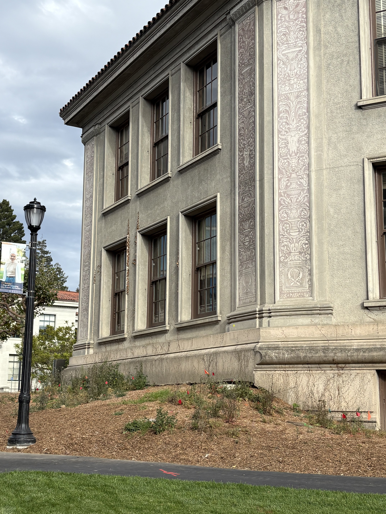
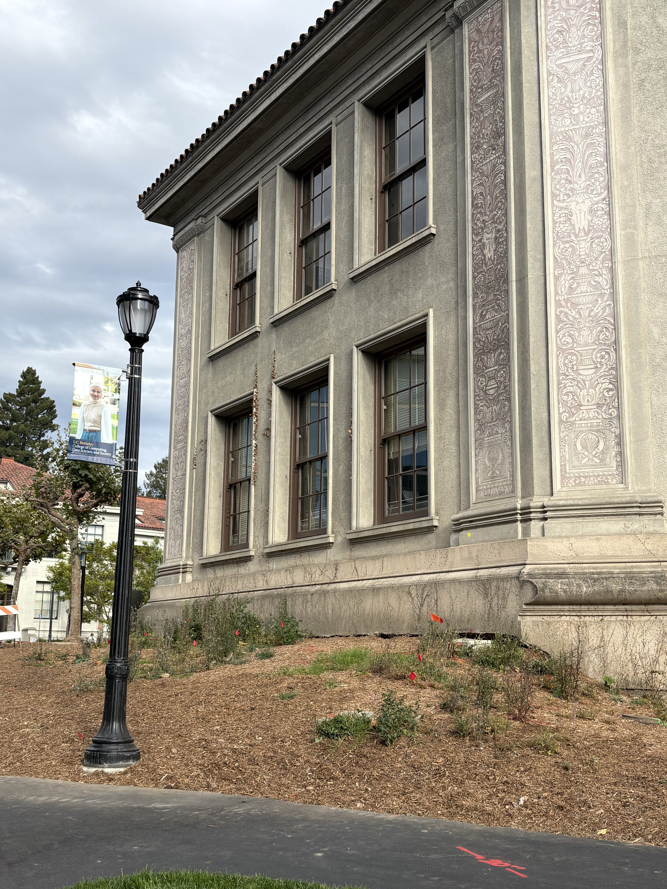
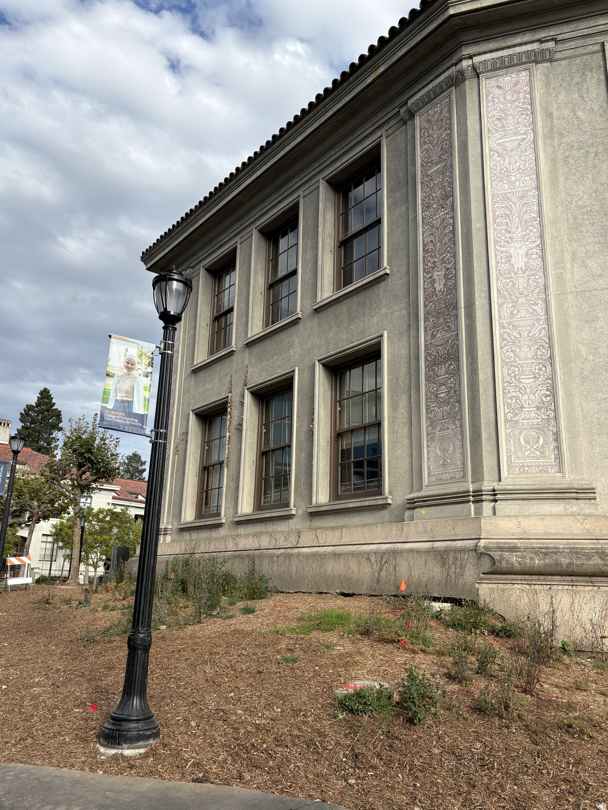
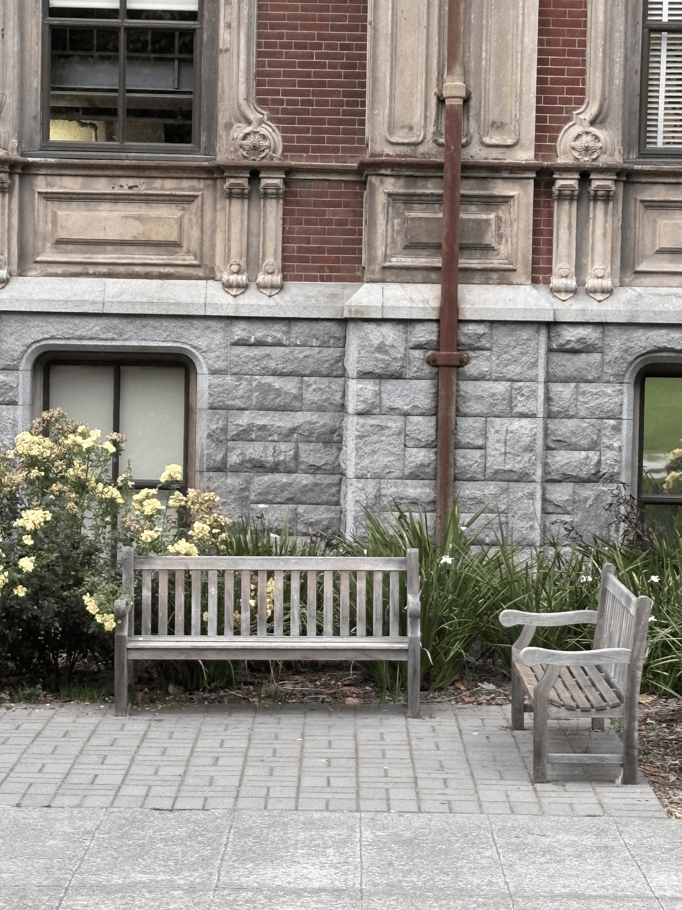

Project 0 — Becoming Friends with Your Camera
Selfie: The Wrong Way vs. The Right Way
Here are some photos of myself! At shorter focal lengths, the field of view becomes wider. Thus, we moved the camera closer to maintain the same framing, which led to distortion of central facial features.
Architectural Perspective Compression
Here are photos of the side of a hall near the Gateway Building.





The first photo was taken farther away and zoom in, so the differences in depth appeared compressed, making the building look flatter. As I moved closer to the building and decreased the focal length, the depth was emphasized and the building looked less flat.
Dolly Zoom Demonstration

Here is a gif of a bench, where the camera zooms in while the distance to the bench increases. We can see that the background appears to compress and shift while the bench remains approximately the same size.